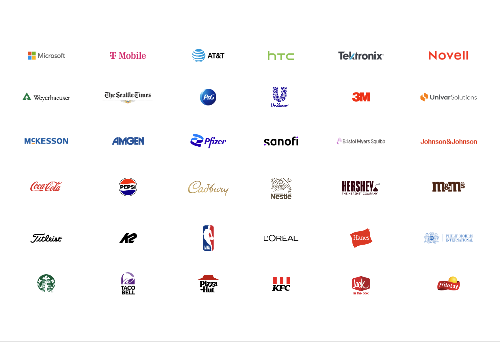

Design Leader · Seattle, WA
Principal Product Designer · Director of Design
A design leader who spans director to principal band — equally effective setting organizational direction and getting hands-on with the work. 25+ years designing across AI and agentic platforms, enterprise product systems, brand architecture, and consumer go-to-market. Built and led design teams at Microsoft for 12 years, grew a 150-person creative agency as Creative Director, and shipped products used by millions — from Windows 10 to Azure AI Foundry. The rare combination of deep AI/UX expertise, enterprise product rigor, and brand-to-commerce fluency across healthcare, technology, and consumer industries.
Selected work
Enterprise AI platforms, operating systems, healthcare systems, and consumer brand — across 25 years.
Clients + Collaborators
In my career I've had the pleasure of working on some of the world's most compelling product experiences and brands. From UX design to consumer packaging, corporate identities to retail spaces, advertising to product videos — I've had the opportunity to design and lead teams creating some insanely cool stuff.

The story behind the résumé
From Office 97 packaging to Azure AI Foundry — 28 years of designing with and for Microsoft, told as 14 chapters.
View Full Journey →About
Design philosophy, working style, and the principles I carry into every engagement.
Every design challenge requires balancing legacy equities (old), new capabilities (new), external influences (borrowed), and go-to-market strategy (blue). A framework that applies to brand systems and agentic platforms equally.
AI that excludes humans from meaningful participation in outcomes is a design failure. My charter: preserve the user's ability to demonstrate competence, inject judgment, and maintain psychological ownership in every AI system I design.
Contact
Available for senior design leadership roles. Open to both IC and management tracks at the principal and director level.